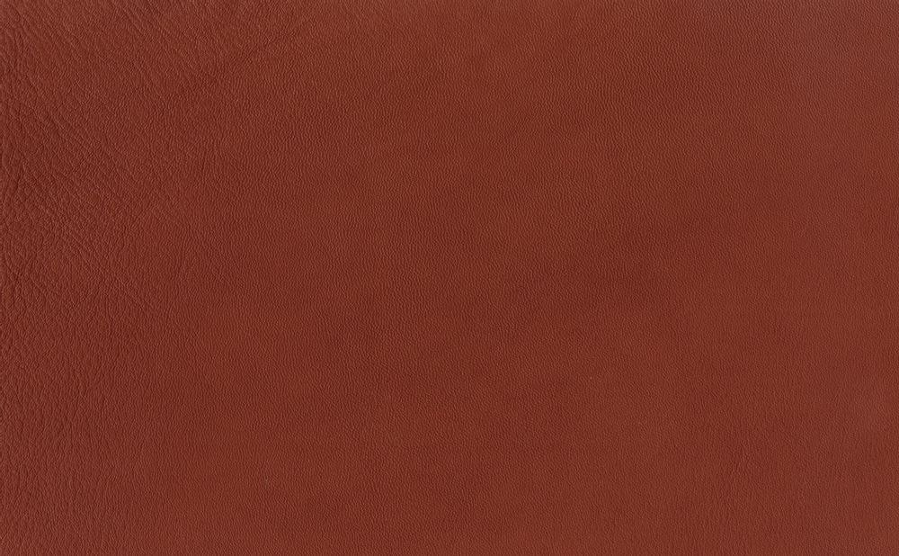

Leathers
Natural character, subtle grain and a palette of warm tones. Explore a selection of Elen leather colors.

Refined aniline / wax leather
Elen
A wax finish brings depth to the color and highlights the individual grain. Select a swatch to explore its texture.
- Material
- Aniline leather, refined / wax leather
- Thickness
- 1.3–1.4 mm
- Selected color
- 1225 cognac
Digital colors are indicative. See a physical sample for your final selection.